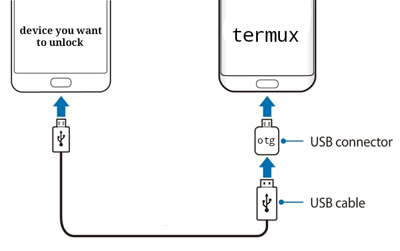

Requirements:
- A second Android phone
- OTG adapter
Step 1: Xiaomi phone
Go to Settings » About phone » MIUI version. Tap repeatedly on the MIUI version until you see the pop-up You are now a developer! Go back to Settings, click on Additional settings, then Developer options. Enable OEM unlocking and USB debugging. Bind your Xiaomi account to your phone. Tap Mi Unlock status » Agree » Add account and device. Make sure your device can connect to the internet using mobile data. Once the account is successfully bound, you should get a message Added successfully. Mi account is associated with this device now.
Step 2: On the second Android phone
1 Install Termux app
2 Install Termux API app
3 From Termux command line:
termux-setup-storage
curl https://raw.githubusercontent.com/offici5l/MiUnlockTool/main/.install | bash
4 Run MiUnlockTool with command:
miunlock
5 enter your Xiaomi account username(“Id” or “Email” or “Phone with +”) and press Enter
6 Enter password and press Enter
7 Press Enter to open the confirmation link in the default browser (Notice: If logged in with any account in your default browser, please log out before pressing Enter.) When the confirmation page opens in your browser, enter your username and password You will be asked to send a verification code either by email or phone number Choose what suits you After obtaining the verification code and entering it The phrase “{“R”:””,”S”:”OK”}” will appear, Copy the URL and paste it into termux, and press Enter
8 turn off your Xiaomi phone, press and hold the Volume Down key and the Power button to enter bootloader mode.
9 Connect devices via the OTG adapter

10 When the device is recognized, you will be asked to press Enter to unlock the bootloader
This method provides a convenient way to unlock your Xiaomi bootloader without needing access to a PC.